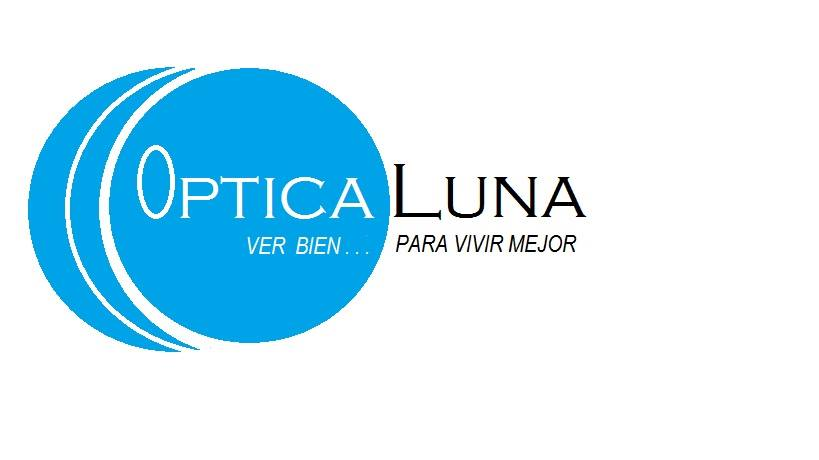

¿Quienes Somos?
Misión y Visión
Visión:
•Claridad a tu vida
Misión:
•Vivimos para ver una sonrisa en tu mirada.
Se sustenta en cuatro puntos básicos:
• Conocer a nuestros clientes profundamente para convertirlos en clientes de por vida.
• Hacer ver bien a nuestros clientes, pero también y al mismo tiempo lograr que puedan ver y sentirse bien con su imagen.
• Sorprender a nuestros clientes con un servicio de excelencia, demostrando así nuestra pasión por el servicio.
• Aumentar la calidad de vida de nuestros clientes al mejorar su vista.
Atrás